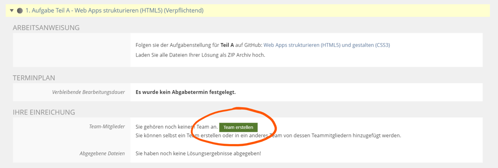
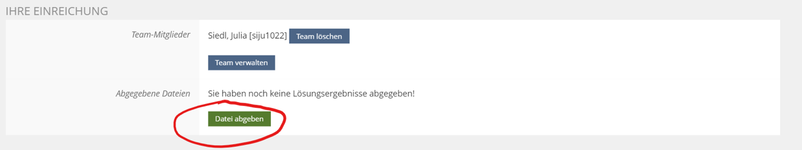
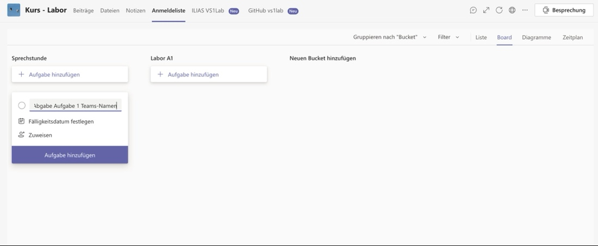
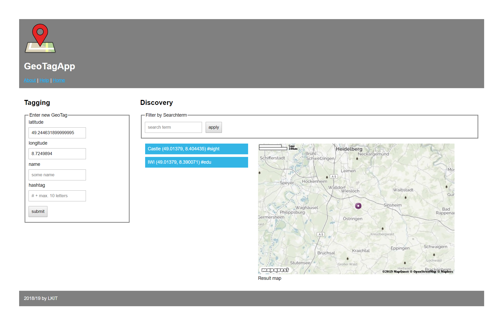

Laboranleitung
Diese Anleitung ist als Starthilfe gedacht, um Studenten die ersten Schritte im Labor "Verteilte Systeme 1" zu erleichtern.
Letztes Update (Sommer 2021): Armin Kunkel, Benjamin Schliebitz, Felix Nagy,
Niklas Gadermann, Stephan Westphal
Organisatorisches
Beim VS1 Labor handelt es sich um Gruppenarbeit. Der Quellcode muss vor der Abnahme im ILIAS hochgeladen werden. Die Abgabetermine sind dem ILIAS Kurs zu entnehmen, wobei Korrekturen bis Freitag nachgereicht (hochgeladen) werden müssen. Bei Korrekturen erfolgt dann eine weitere Abnahme beim nächsten Termin. Bei jeder Abgabe muss jedes Teammitglied (virtuell) anwesend sein.
Wenn ein Gruppenmitglied bei der Abgabe nicht anwesend war, so kann er diese, unter Vorlage einer Begründung für die Abwesenheit, nachholen.
Wichtig bei der Abgabe ist außerdem, dass jedes Mitglied der Gruppe den Code verstanden hat. Es ist daher nicht ausreichend, wenn eine einzelne Person den gesamten Code vorstellt.
Es gibt eine Bonusaufgabe, welche nicht abgegeben werden muss, um das Labor zu bestehen. Es ist jedoch zu empfehlen, die Aufgabe zu bearbeiten, da deren Abgabe mit Bonuspunkten für die Klausur belohnt wird.
Ablauf der Abgabe
Die Verwaltung der Gruppe erfolgt im Ilias. Hier wird die Lösung hochgeladen und es kann auch überprüft werden, ob die Aufgabe als bestanden eingetragen wurde. Die verpflichtende Besprechung der Aufgabe mit den Tutoren erfolgt in Teams.
-
Im Ilias erstellt eine Person ein Team und kann mithilfe der Kürzel die Gruppenmitglieder hinzufügen. 
-
Die Lösung der Aufgabe wird ins Ilias hochladen z.B. als zip-Archiv 
-
In Teams den zur Aufgabe passenden Kanal öffnen\ (Für Aufgabe 1 den Kanal "Labor Aufgabe 1 -- HTML und CSS" verwenden)
-
Unter dem Reiter Anmeldeliste eine neue Aufgabe erstellen mit den Microsoft Teams Namen der Gruppenmitglieder 
-
Die Gruppenmitglieder werden von einem Tutor zu einer Besprechung eingeladen
-
Nach erfolgreicher Abgabe trägt der Tutor die Aufgabe als bestanden ein
Die Aufgabenstellung
Im Laufe des Semesters soll eine Single-Page-Webanwendung entstehen mit der ihr interessante Orte in Form von GeoTags speichern, verwalten und teilen könnt.

Die "Geo Tagging App" besteht im Grunde aus zwei Komponenten:
Der Tagging-Bereich
Hier können neue GeoTags durch die Eingabe aller Attribute (Längen-/ und Breitengrad der Koordinate, Name und Hashtag) angelegt werden.
Der Discovery-Bereich
Der Discovery-Bereich ist etwas komplexer aufgebaut. Er besteht zum einen aus einer Liste und einer Karte, in denen bereits erstellte GeoTags in einem bestimmten Umkreis angezeigt werden.
Außerdem bietet das Formular im oberen Bereich der Discovery-Komponente die Möglichkeit bestehende GeoTags anhand eines Suchbegriffs zu filtern.
Natürlich müsst ihr die komplette Anwendung nicht von Grund auf selbst konzipieren. Herr Professor Zirpins stellt euch auf Github eine Art Vorlageprojekt zur Verfügung, in dem der grundsätzliche Aufbau der Web-App, sowie die wichtigsten Komponenten bereits definiert und teilweise implementiert sind. In den Vorlagen ist auch immer genau gekennzeichnet, an welchen Stellen noch etwas fehlt bzw. wo eure Lösung hin soll.
Wie ihr diese Vorlage auf die Poolrechner oder eure eigenen Rechner bekommt seht ihr im nächsten Kapitel.
Um die Web-Anwendung fertig zu stellen, müsst ihr im Laufe des Semesters nach und nach Teilaufgaben lösen, die sich mit der praktischen Umsetzung von (aus der Vorlesung bekannten) Webtechnologien beschäftigen. Diese Aufgaben sind wie folgt gegliedert:
Aufgabe 1
In Aufgabe 1 sollt ihr die Oberfläche der Geo Tagging App fertigstellen. Im Vorlagen Projekt findet ihr die Dateien 'index.html' und 'style.css', die entsprechend angepasst werden müssen.
-
index.html: Das HTML Grundgerüst muss um die Formulare für das Tagging und das Suchen ergänzt werden. Zu beachten ist hier, dass auch die Funktionalität und Validierung mir HTML5-Mitteln umgesetzt werden soll.
-
style.css: Über die Anpassung des Stylesheets der Geo Tagging App soll das visuelle Design der App optimiert werden. Dazu gehört, dass sich das Layout an verschiedene Endgeräte anpasst (responsive web page). Dies wird durch die Verwendung eines Grid Layout mit Flexbox erreicht.
Aufgabe 2
In Aufgabe 2 soll dann das clientseitige JavaScript so angepasst werden, dass die aktuellen Koordinaten automatisch in die entsprechenden Eingabefelder eingetragen werden. Außerdem soll im Discovery Bereich, statt einer statischen, eine dynamisch generierte Karte mit allen vorhandenen GeoTags angezeigt werden.
Tip
Falls ihr nicht wisst, wo ihr ansetzen sollt, schaut mal in die Kommentare der 'geotagging.js' Datei. Vielleicht wird es dadurch etwas klarer.
Aufgabe 3
Die dritte Aufgabe beschäftigt sich mit dem serverseitigen Teil der Geo Tagging App. Dieser wird benötigt um GeoTags auf dem Server abzulegen und bestehende Tags zu filtern. Im serverseitigen Script müssen gemäß der Aufgabenstellung Daten-/ und Verwaltungsstrukturen für die GeoTags definiert werden. Außerdem müsst ihr das Verhalten für verschiedene Routen festlegen, in denen bestimmten Requests verarbeitet werden und dynamisch erzeugte Ansichten als Response an den Client zurückgeliefert werden.
Diese Ansichten werden mit der Template-Engine EJS generiert. Beispiele für die Verwendung findet ihr z.B. unter https://github.com/mde/ejs/wiki/Using-EJS-with-Express und https://ejs.co/#install.
Hier werdet ihr auch zum ersten mal die JavaScript Laufzeitumgebung node.js und den darin enthaltenen Paketmanager npm verwenden.
Ladet euch dazu zunächst auf https://nodejs.org die für eure Plattform benötigten Installationsdateien herunter und installiert Node.js (auf den Pool-Rechnern schon installiert).
Alles weitere könnt ihr der offiziellen Aufgabenstellung entnehmen.
Aufgabe 4
In dieser Aufgabe sollen eigentliche keine neuen Features entwickelt werden. Hauptsächlich geht es darum, die Performanz der Anwendung durch asynchrone Kommunikation zwischen Client und Server zu optimieren. Ihr müsst dazu neue Routen auf der Serverseite festlegen, die die Funktionalität einer REST-Api bereitstellen. Außerdem müsst ihr das clientseitige JavaScript so anpassen, dass das Speichern und Filtern von GeoTags asynchron über AJAX abgehandelt wird. Somit umgeht ihr, dass bei jedem Speichern und Filtern die komplette Seite serverseitig generiert und übermittelt werden muss.
Wenn ihr euer Serverscript entsprechend angepasst habt und eure
REST-Schnittstelle vorab testen wollt, empfiehlt es sich diese mit einem
generischen REST Client zu testen.
Zu empfehlen sind hier
Insomnia/Postman: GUI Programme um requests zu erstellen und zu senden
Hoppscotch: Browser-Extension, ähnlich wie Insonmia/Postman aber ohne Download und mit google-docs like cloud-speicherung
VS-Code rest client: Extension mit der sich Requests die in Textform in einer Datei stehen absenden lassen können
Curl: Command-line-interface für die Production-Ready http bibliothek libcurl
Durch das Testen könnt ihr Fehler frühzeitig ausfindig machen und beheben und spart euch später viel Ärger mit lästigem debuggen.
Die genaue Aufgabenbeschreibung findet ihr in den README.md Dateien im Ordner der jeweiligen Aufgabe.
Tip
Auf https://www.w3schools.com/ findet ihr viele Tutorials und Beispiele zu den gängigsten Web Technologien. Ein Blick lohnt sich auf alle Fälle!!!